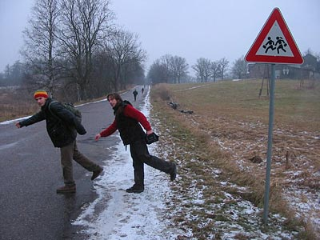
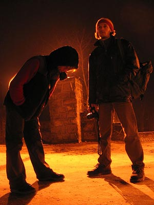
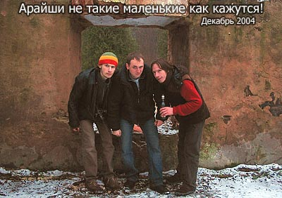

Это опера в четырёх песнях посвящена небольшому поселению Арайши в 10-ти километрах от Цесиса, что в Латвии. Поют местные теноры, а вот роль танцоров играют три неких чижа, которых я не знаю.
Проснулся и понял, что у меня болит зуб — примета самая, что ни на есть дурная…
Бывают такие дни, когда утро начинается не тогда, когда ты пересилив себя встал с кровати, а немногим позже. Утро начинается тогда, когда ты вышел на улицу, добрёл до ближайшей заправочной станции и сделал первый глоток кофе из пластикового стаканчика. Бывают такие вечера, которые заканчиваются не тогда когда ты устав от борьбы со сном свернулся в гостинном кресле, а когда утром возле заправочной станции, обжигаясь, ты делаешь третий глоток из стаканчика с крышечкой…
Между первым и третьим глотками утро и вечер существуют вместе.
Но это было сказано слишком пафосно, а как-раз таки пафосности никакой и не было. Были мусорники — те самые контейнеры, которые «разделяй и властвуй»: для стекла, бумаги, пластика и так далее. Проходя утром с Вороном мимо таких мусорников неожиданно пришла в голову трезвая мысль, о том. что среди них вполне может находиться ещё один контейнер. Большой и с надписью «железобетон» (Ворон утверждал, что на надписи «керамзитобетон», но не суть важно). И вот мусорные контейнеры — контейнер «целлулоид», контейнер «ручки шкафа», контейнер «грязь из под ногтей» — все цвета радуги и все слова академического толкового словаря.
В конце концов мы с Вороном выяснили что среди мусорников обязательно должна стоять и огромная пепельница — формой не отличающаяся от пепельниц в барах.
И вот, утро после первого глотка кофе с крышечкой. Мы дозвонились до Булкина и встречались с ним у вокзала. Решили втроём не бездарно провести этот замечательный выходной день, а съездить прогулятся по окрестным городам и селениям. К примеру, под славным городом Цесисом в Латвии есть поселение Арайши (которое мы успешно называли Ариеши, Айриши и даже порой Ар-ар-ар — когда совсем забывались). Ехать туда из Риги автобусом, а автобус… О! А автобус вот прямо сейчас отходит! — сказали мы зайдя на автовокзал посмотреть расписание. Когда уже сели, сообразили что ни еды ни алкахи мы не купили, а вероятность магазинов в Ар-ар-арайши сводилась к пессемистической.
Вообще же, что касается забытого, несделанного и пессиметричного — примета была самая, что ни на сеть дурная. Ворон уехал в Арайши без алкахи, без тёплой шапки и в рюкзаке пустой термос без глинтвейна. Дмитрий уехал без алкахи и с фотоаппаратом, который может сам перемотать плёнку в любом месте (что он и сделал). Я же представлял собой картину «вышел позавчера мусор вынести»: без алкахи, без фотоаппарата, без паспорта, с умирающим без питания телефоном и в тонких носках, от чего мои ноги делали то, чего давно уже не делали. Мёрзли. Про зуб я говорил, да? Что никто не знал как в Арайши ехать и где надо выходить я тоже говорил?
А букву «Ы» в русский язык ввёл Ыхтар Ыхнамбиев.
В автобусе, пытаясь узнать нужную нам остановку Ворон сдружился с водителем и со всеми передними пассажирами. В какой-то момент — услышав краем уха, как водитель спросил какую-то пассажирку не проводит ли она нас, раз уж она там рядом живёт — я подумал. что в конце концов Ворон напросится к кому-нибудь на чай.
Но на чай не напросились, на безлюдной остановке вышли только мы трое, холодный ветер залез за воротник, а за холмами возвышался мельничный силует...
Вся экономика Арайши построена на единственной мельнице. Мельница молет муку, вырабатывает электричество, отпугивает ворон и привлекает туристов. Занятость населения достигла эффективного уровня тоже благодаря мельнице — помимо непостредственно обслуживающего персонала работой обеспечиваются и крыша мельници, и полиция охранающая мельницу и интим сервис обслуживающий туристов на вертящихся жерновах.
Помимо боделя, неподалёку от мельницы стоял интернат (хотя некоторые колючие проволоки и пулемётные вышки на столбах сеяли сомнения). На входной двери которого было повешены парвила поведения посторинних людей на территории. Первым же пунктом в правилах объяснялось кто такие посторонние: лица которые не учатся и не работают в интернате, а так же те три чижа, которые приехали сюда посреди декабря!
На самом деле кроме трёх чижей, здесь вообще никого не было — ни своих, ни посторонних. Когда мы вышли к зданию с надписью «Библиотека», мы очень хотели найти кого-нибудь и спросить, мол не подскажете, как пройти в библиотеку? Но фиг там кого мы встретили. Дмитрий сказал, что это когда мы приехали в гости к ним, они все уехали в Ригу к нам. Тем не менее, когда магазин нам стал необходим больше жизни, появился старичёк и магическим жестом указал в сторону дороги.
Половину дня мы провели в магазине и около…
Вот например огромной радостью для нас стали три банана — заботливо купленных Вороном во втором заходе. Мы все трое очень красиво кушали эти бананы, а потом очень красиво положили шкурки в мусорник. Всё выглядело как бы самим-собой разумеещимся, и очень элегантно и жёлто. То есть получается, что с одной стороны это еда — покушать, насытиться и прочее, а с другой — всё-таки это бананы. С вином и чипсами то же самое! Впрочем, я уверен что никто ничего и не понял, что я хотел сказать этим параграфом. Следующая глава будет интереснее.
Арайши не такие Арайши как кажутся.
Когда ещё утром зашла речь о трёхногих штативах, Ворон упомянул что его штативу скоро исполнится пять лет. По дружески поздравили и разговорились о том, что штативу скоро в школу идти. Вот Ворону и прийдётся каждое утро вставать перед работой и отвозить штатив в школу штативов, а вечером забирать.
В школе же, молодых штативов обучают как привильно штативить.
Как крепко держать фотоаппарат, как плавно двигаться с камерой, как быстро разбираться и собираться, как устойчиво стоять на двух ногах… Впрочем последнее можно не учить если получить у врача справку для освобождения от физкультуры. И только после окончания школы, молодые штативы могут освоить какую-либо профессию. Большинство идут работать в студии к профессиональным фотографам или операторам — эта профессия считается элитной, но немного банальной. Многие штативы становятся опорой больным и обездоленным. В любом случае, почти все штативы становятся опорой чему-либо.
После посещения магазина Арайши преобразились. Возникла концепция Арайши как бренда во фразе: «Арайши не такие маленькие как кажутся» от Дмитрия. Интересные штуки появлялись буквально из под земли или же из странных и причудливых механизмов. Появлялись люди, которые всё теми же магическими пассами отсылали нас в различные направления. И если причина появления людей была нами найдена позднее в механизме по производству людей, то появление автомобильных фар вдалеке, дорожных знаков по краям и автобусного расписания над головой — всё это было для нас таинственной и чарующей загадкой.
Та самая фабрика, которая производит всех людей на свете.
При пожаре разбейте стекло и воспользуйтесь пожарным.
По правде говоря, всё дело в том, что в Арайши хоть и есть завод по производству людей, остальная промышленность кроме мельницы развита слабо. Телевизоров, телефонов, велосипедов и огнетушителей не хватает. Но выход из положения был найден — производство пожарных, курьеров, носильщиков и прочих бытовых людей.

Произведённые люди тут же перебегают дорогу и могут ненароком попасться под колёса неопытному водителю.
Рождественская дура.
Древние росписи.
Древние мусо… тьфу! В смысле, несмотря на универсальность человеческого завода, очень сложно его продукцией заменить какие-то мелкие вещи, такие как гвозди. Приходиться ставить не как у людей.
А это фотография вам наверняка должна показаться непонятной и странной. А вот! Специально показал, чтобы вы почувствовали мистику этого места.
Рига — 13:35 и только по пятницам…
Прежде чем доехать до Цесиса, мы растворились в темноте Арайши. А потом сели в автобус и хитрый Ворон придумал хитрый же план: вот билеты из Риги в Арайши нам продали по цене Рига-Цесис. Ну так чего бы нам не поехать на этих же билетах остаток положенного нам пути. Рассказали это водителю, тот рассмеялся, плюнул на нас и сказал мол, садитесь жулики.
В Цесис мы приехали уже растворёнными. И благодаря этому увидели чёрный луч, который не должен видеть ни один нерастворённый человек. Дьявольщина продолжилась когда в течении получаса мы напротив полицийского участка фоотграфировали жёлтые фонари и распивали красную. Для Ворона эта дьявольщина продолжилась ещё дальше, когда в магазине вместе с сырными булочками он купил себе странный напиток. Сырные булочки, кстати, очень хорошие.
Гуляя по городу Булкин нашёл очень интересную подворотню. Он позвал меня мол, смотри, это самая интересная подворотня Цесиса, которую я видел. На эти слова дворник, стоявшая неподалёку, обернулась к нам и тихим хитрым голосом сказала: здесь и точка есть, если что.

Но не смотря на чёрные лучи и точки, Цесис для нас был в тот день не более, чем связующее звено между Ригой и Арайши. Поэтому оставшееся до поезда время мы провели в кафе в шумной компании местной молодёжи. Компания сначала буянила разливая пиво за своим столиком и выдумывая друг-другу задачи: «можешь ли ты положить три спички так, чтобы не осталось ни одного треугольника?» Заметив наши фотоаппараты ребята заинтересовались и попросили их сфотографировать. После чего уже Ворон в свою очередь заинтересовался ребятами. Пол часа до электрички Ворон читал Цесиским лекцию на чистейшем латышском (Все ему кричали: ворон, говори по-русски! мы понимаем! А тот нифига.) о пользе и благоприятном впечатлении водных походов и о необходимости Цесису иметь свою команду водных туристов.
Через два дня после приезда Ворон сообщил мне, что он постирал в джинсах е-майл Цесиских ребят. На который они просили выслать фотографии.
Бывают такие дни, которые заканчиваются не тогда, когда ты ставишь будильник на утро и ложишся в кровать. Конец такого дня может застать тебя в любой момент, но чаще всего это происходит в поездах и автобусах обратного пути. И бывают такие дни которые начинаются не тогда, когда ты добравшись по приезду домой выспался и полон сил, а тогда когда в середине пути, едва проснушвись ты ивидешь в окне что-то инетресное и пулей выскочишь из поезда.
Но это уже совсем другая история…
И опять же, чтобы не заканчивать на пафосной ноте зочу заметить следующее: кто то из вас может в нескольких словах пересказать мой рассказ: Три парня уехали бухать в какие-то ебеня!
Ммм… Ну в общем-то можно с вами и согласиться. Разве что не опьянел никто из нас.
